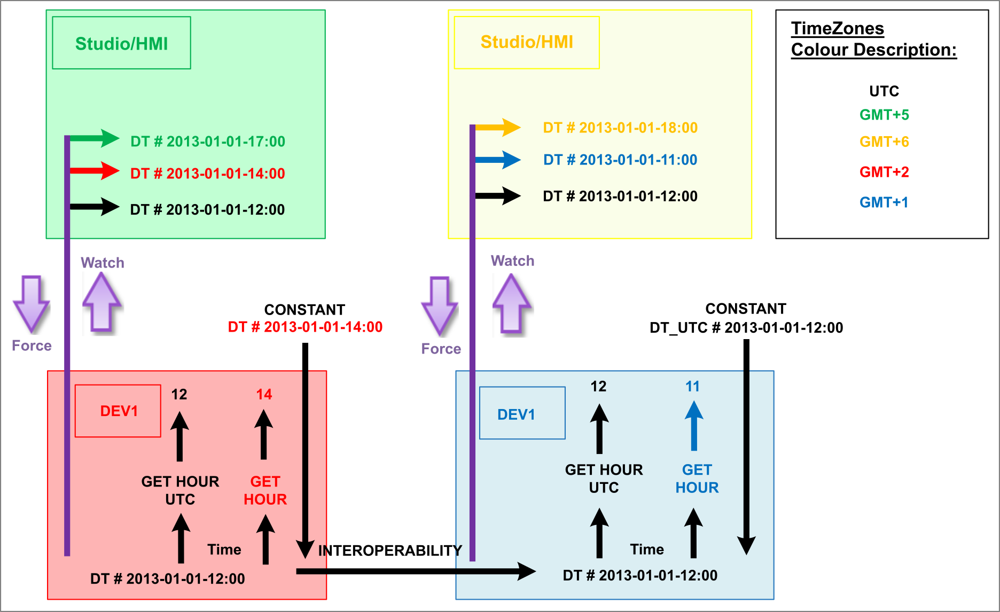

The IEC 61131-3 defines two duration data types,
TIME
LTIME
and six data types representing different aspects of date and time values:
DATE
LDATE
TIME_OF_DAY (TOD)
LTOD
DATE_AND_TIME (DT)
LDT
The long versions of these data types have been added in the third edition of the standard and are well defined while the others rely on a given implementation.
TIME - duration of time
Min. value: TIME#-2147483648ms, T#-24d20h31m23s648ms
Max. value: TIME#2147483647ms, T#24d20h31m23s647ms
Resolution: milliseconds
LTIME - duration of time
Min. value: LTIME#-9_223_372_036.854_775_808s,
LT#-106751d23h47m16s854ms775us808ns
Max. value: LTIME#9_223_372_036.854_775_807s,
LT#106751d23h47m16s854ms775us807ns
Resolution: nanoseconds
DATE - absolute point in calendar time, representing a single day
Min. value: DATE#1970-01-01, D#1970-01-01
Max. value: DATE#2038-01-18, D#2038-01-18
Resolution: days
LDATE - absolute point in calendar time, representing a single day
Min. value: LDATE#1970-01-01, LD#1970-01-01
Max. value: LDATE#2038-01-18, LD#2038-01-18
Resolution: days
TIME_OF_DAY (TOD) - absolute point at one day
Min. value: TIME_OF_DAY#00:00:00.000, TOD#00:00:00.000
Max. value: TIME_OF_DAY#23:59:59.999, TOD#23:59:59.999
Resolution: milliseconds
LTIME_OF_DAY (LTOD) - absolute point at one day
Min. value: LTIME_OF_DAY#00:00:00.000_000_000,
LTOD#00:00:00.000_000_000
Max. value: LTIME_OF_DAY#23:59:59.999_999_999,
LTOD#23:59:59.999_999_999
Resolution: nanoseconds
DATE_AND_TIME (DT) - absolute point in time
Min. value: DATE_AND_TIME_UTC#1970-01-01-00:00:00.000,
DT_UTC#1970-01-01-00:00:00.000
Max. value: DATE_AND_TIME_UTC#2038-01-18-16:14:07.000,
DT_UTC#2038-01-18-16:14:07.000
Resolution: milliseconds
LDATE_AND_TIME (LDT) - absolute point in time
Min. value: LDATE_AND_TIME_UTC#1970-01-01-00:00:00.000_000_000,
LDT_UTC#1970-01-01-00:00:00.000_000_000
Max. value: LDATE_AND_TIME_UTC#2038-01-18-16:14:07.000_000_000,
LDT_UTC#2038-01-18-16:14:07.000_000_000
Resolution: nanoseconds
There is no abbreviate for data types TIME, LTIME, DATE and LDATE. Abbreviations only exist for literal prefixes: T#, LT#, D# and LD#.
Date and time values are stored internally as UTC values. A textual representation by default is considered to be using the local time zone of the controller executing. Therefore DT#2022-01-01:00:00:00:00 is New Year wherever the controller may be. To specify UTC time zone, use the UTC specific prefixes. Also note that there is no DT_UTC data type.
The literals for DATE, LDATE, TOD and LTOD are local time and not time zone dependent. Literal prefixes DATE_UTC#, LDATE_UTC#, TOD_UTC# and LTOD_UTC do not exist.
The upper limits for data types DATE, LDATE, DATE_AND_TIME and LDATE_AND_TIME do not reflect the actual capacity of these types. Due to limitations in the underlying operating systems they have been chosen to be compliant with supported controllers. The compiler enforces these limits for portability and interoperability reasons. The limits will change in the future.
Operating a controller in UTC time zone can solve a portability problem with applications expecting all date and time values to be UTC. If a distributed application does not span multiple time zones, this may not cause problems.
While the standard defines these data types and their memory format, it does not define functions to handle these variables. It also does not define the time zone interpretation of time variables (which gets even more significance in distributed systems). According to this lack of specification, the following article describes the handling of time variables in EcoStruxure Automation Expert Buildtime systems and the available functions for handling times.
The concept of Schneider Electric is to handle all times in the Runtime as UTC and convert them to the local time zones at representation or in the according functions.

All variables of type DT/LDT hold UTC date and time values.